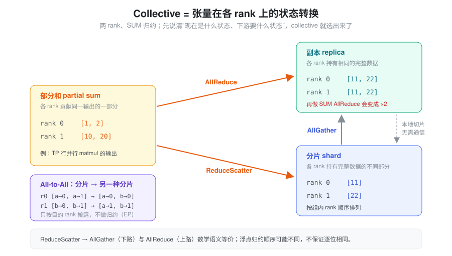
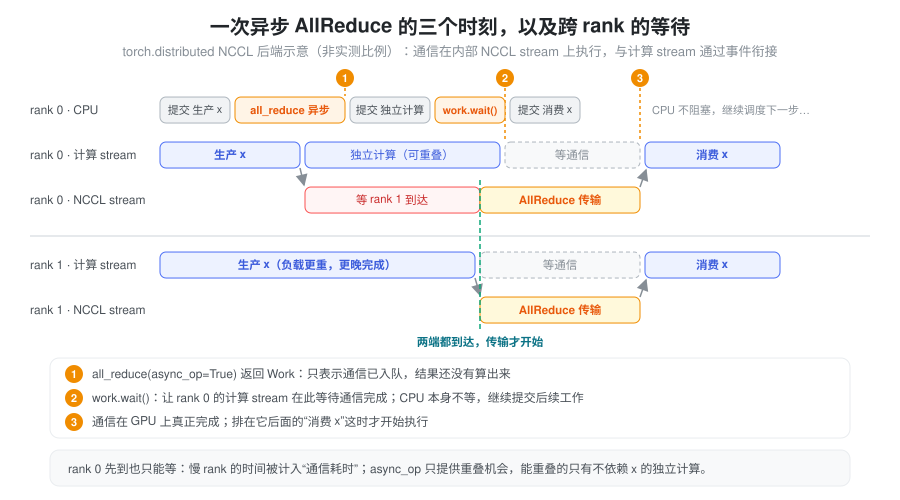
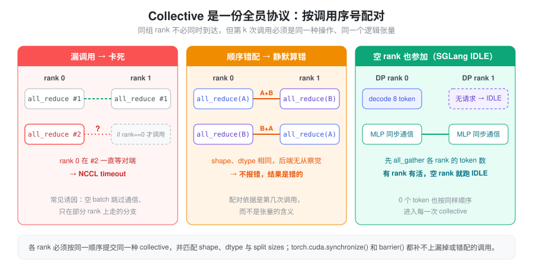

all_reduce()返回之后，结果已经算完了吗？- 开了
async_op=True，为什么没有通信计算重叠，甚至读到了错误结果？ - 每张 GPU 单独运行都正常，合起来为什么卡在 NCCL timeout？
单卡程序只有一条依赖链：同一个 stream 上的 kernel 按提交顺序执行。多卡之后，一个张量的“完整值”不再属于任何一张卡，每次通信同时牵扯三件事：数据要从什么状态变成什么状态、所有 rank 是否按同一份协议参加、本卡上什么时候可以读写通信 buffer。 只满足其中一两件，程序仍可能卡死、静默算错或失去重叠。
抽象：一次通信 = 状态转换 + 全员协议 + stream 依赖
把任意一次 collective 拆成三个独立的问题来看：
- 状态转换（算什么）：输入在各 rank 上是副本、分片还是部分和，下游需要哪种状态。它决定该用 AllReduce、AllGather、ReduceScatter 还是 All-to-All。
- 全员协议（和谁、第几次）：同组所有 rank 必须按同一顺序调用同一种 collective，形状与布局彼此匹配。它决定程序会不会卡住或把错误的张量加在一起。
- stream 依赖（何时可用）：通信在 GPU 的某条 stream 上异步执行，本卡的生产者、通信与消费者之间要有正确的先后关系，buffer 在通信期间不能被覆盖或复用。它决定读到的值对不对、能不能与计算重叠。
前一个问题是“数学”，后两个问题是“工程”。排查多卡问题时，先判断出错的是哪一层：结果数值不对、作业卡住、还是只在开了 overlap 后随机出错，分别对应不同的检查清单。
执行模型：进程、GPU、通信组与 stream
CUDA 分布式程序常用“一进程一 GPU”：每个进程独立运行
Python 代码、持有本地张量，通过
torch.distributed 交换数据。各进程没有共享的
Python 控制流，一个 rank 提交通信也不会替其他 rank
提交。
| 概念 | 含义 | 容易混淆的地方 |
|---|---|---|
| Global rank | 进程在整个作业中的编号 | 不等于本机 GPU 编号 |
| Local rank | 进程在当前节点中的编号 | 通常用于选择本进程的可见 CUDA device |
| World size | 整个作业的进程数量 | 不一定等于 TP 或 EP 的大小 |
| Process group | 一组参与通信的 rank | TP、EP、DP 可以使用不同的组 |
| Group rank | 进程在某个通信组内的编号 | 拼接和分片布局要按该组的 rank 顺序理解 |
| CUDA stream | 本设备上的执行队列 | 不能直接给另一台 GPU 建立跨设备通信协议 |
torchrun 提供
RANK、LOCAL_RANK、WORLD_SIZE
等环境变量；典型绑定方式是先
torch.cuda.set_device(local_rank)，再初始化
NCCL process group。设备编号受
CUDA_VISIBLE_DEVICES 影响。见 torchrun
文档。
NCCL 是 NVIDIA GPU 通信库，负责 collective
和点对点通信的执行；torch.distributed
提供通信接口，ProcessGroupNCCL 负责把调用接到
NCCL。实际传输可能经过 NVLink/NVSwitch、PCIe
或跨节点网络，路径取决于硬件拓扑与配置。增加 GPU
数量，通常也会增加通信与协调成本。
Collective：先判断张量在各 rank 上是什么状态
区分三种输入状态，比记 API 名字更有用：
- 副本：各 rank 持有相同的完整数据。
- 分片：各 rank 持有完整数据中不同的一部分。
- 部分和：各 rank 对同一个输出贡献一部分数值，需要相加才能得到完整结果。

这样看，选 collective 就变成在图上找一条边：部分和要变副本走 AllReduce，要变分片走 ReduceScatter；分片要变副本走 AllGather；副本要变分片只需本地切片。对相同副本再做 SUM AllReduce，会把值乘以组大小，不会自动得到平均值——这是“状态判断错了”最常见的后果。
下面以两 rank、SUM 归约为例。布局均按通信组内的 rank 编号排列。
| 操作 | Rank 0 输入 | Rank 1 输入 | Rank 0 输出 | Rank 1 输出 |
|---|---|---|---|---|
| AllReduce | [1, 2] |
[10, 20] |
[11, 22] |
[11, 22] |
| AllGather | [1, 2] |
[10, 20] |
[1, 2, 10, 20] |
[1, 2, 10, 20] |
| ReduceScatter | [1, 2] |
[10, 20] |
[11] |
[22] |
| All-to-All | [a→0, a→1] |
[b→0, b→1] |
[a→0, b→0] |
[a→1, b→1] |
| Broadcast，root=0 | [1, 2] |
接收 buffer | [1, 2] |
[1, 2] |
在兼容的布局和归约操作下，ReduceScatter 后接 AllGather，与 AllReduce 在数学语义上等价。浮点归约的执行顺序可能不同，不能据此要求逐位相同（见 数值精度）。All-to-All 则是重分布：每个 rank 向不同目的 rank 发送不同内容，不做数值归约。见 NCCL collective 语义。
常见 PyTorch 对应接口：
dist.all_reduce(x, op=dist.ReduceOp.SUM) # 原地更新 x
dist.all_gather_into_tensor(full, shard) # 等长分片，预分配 full
dist.reduce_scatter_tensor(shard, partial) # 归约后按组内 rank 分片
dist.all_to_all_single(received, packed) # 沿 dim 0 拆分、交换、拼接以上只是接口示意，buffer 的形状与大小要满足各 API 的要求；不要假设所有接口都支持任意不等长输入。通信还要求各 rank 的 dtype、元素数量、归约操作以及发送接收布局彼此匹配。
同步：CPU 返回、stream 可消费、GPU 完成是三个时刻
直接使用 NCCL 时，通信提交到调用者指定的 stream；常规阻塞 communicator 的调用返回通常表示工作已入队，设备仍异步执行。见 NCCL CUDA stream 语义。
使用 torch.distributed 的 NCCL
后端时，通信通常在内部专用 stream
上执行，后端负责与调用处的当前 stream 建立依赖。不要把
Python 调用所在 stream 与 NCCL 实际执行 stream
当成同一个队列。

图里有两种等待叠在一起：本卡上“消费 x”等通信 stream（stream 依赖），通信 stream 又等 rank 1 到达（跨 rank 会合）。rank 0 先到并不能先算完，它的通信 kernel 会占着时间等对端；所以单卡 profiler 里看到的“通信耗时”，经常包含了别的 rank 的计算时间。
| 操作 | 应如何理解 |
|---|---|
async_op=False |
返回后可按接口约定在调用处的 CUDA stream 上消费结果；不等于 CPU 等到了全部 GPU 工作完成 |
async_op=True |
返回 Work，由调用者安排何时等待结果 |
work.wait() |
NCCL 常规路径中，让调用处的当前 stream 等待通信完成；通常不要求 CPU 等到设备完成 |
event.synchronize() |
CPU 等待该事件完成 |
torch.cuda.synchronize(device) |
CPU 等待指定设备上的工作完成，不同步整个分布式作业 |
dist.barrier(group=...) |
指定通信组内的 rank 会合；NCCL barrier 会阻塞 CPU，不适合逐层插入 |
显式 timeout、阻塞等待配置或不同后端可能改变
wait() 的 CPU
阻塞行为。is_completed()
也应按对应后端的完成定义理解，不能当作任意 stream
都可安全消费的凭据。见 PyTorch
同步与异步 collective 和 Work.wait。
Buffer 生命周期与计算顺序要分别处理
异步通信期间，输入不能被覆盖，输出不能被提前读取或复用；原地 AllReduce 的输入输出是同一块存储，尤其要避免通过 alias 修改它。代码应保留 buffer 和 Work，直到必要的通信及消费依赖已经处理好。
record_stream()
通知缓存分配器：存储还会被某个 stream
使用。它不会让这个 stream
等待数据生产完成。
wait_stream()/wait_event()
建立执行先后，record_stream()
或明确的保活与回同步策略处理存储复用，二者解决不同问题。见
CUDA
stream 与内存生命周期，以及本站 CUDA 异步执行、显存管理。
TP、EP、DP：不同并行方式对应不同数据流
三种并行方式可以直接套用“状态转换”的视角：TP 制造部分和或分片，EP 制造按目的地重排的分片，DP 在推理中原则上不产生需要合并的状态。
TP：把同一次计算切给多个 rank
张量并行切分权重和计算。以 Y = XW 为例：
- 列并行：按输出维度切分 W，各 rank 得到 Y 的不同特征分片。下一层能接收分片时可以直接继续；需要完整 Y 时才 AllGather。
- 行并行：按输入维度切分 X 与 W，各 rank 得到相同输出位置上的部分和。需要完整副本时 AllReduce；需要归约后的分片时可以 ReduceScatter。
因此，TP 通信的位置由张量分布和后续算子的输入要求决定。经典 Transformer TP 把“列并行 → 行并行”配成一对：中间的分片不用通信，只在行并行输出的部分和处做一次 AllReduce，所以 attention 输出投影和 MLP down projection 各需要一次。序列并行等变体会把这次 AllReduce 拆成 ReduceScatter + AllGather 并调整位置。具体背景见 Tensor Parallelism、Sequence Parallelism。
Decode 的单步消息通常较小，通信延迟与提交开销可能比峰值带宽更关键；prefill 的消息较大，更需要关注传输量和有效带宽。这是分析方向，实际瓶颈仍要测量。
EP：把 token 送到持有目标 expert 的 rank
专家并行的典型路径是：
本地 token → Router → 按目的 rank 打包
→ All-to-All dispatch → 本地 expert 计算
→ All-to-All combine → 恢复 token 顺序并按路由权重合并All-to-All 只交换数据；token 打包、expert 索引、逆置换、top-k 路由权重合并仍由上层处理。一个 token 路由到多个 expert 时，dispatch 可能产生多个副本。
MoE 中每对 rank
的发送量可能不同。all_to_all_single 可通过
split sizes 描述不等长交换：
dist.all_to_all_single(
recv_tokens,
send_tokens,
output_split_sizes=recv_counts, # 按来源 rank 排列
input_split_sizes=send_counts, # 按目的 rank 排列
group=ep_group,
)send_tokens 应按目的 rank 连续打包；split
sizes 按 dim 0 的长度计数，不是字节数。若每行是一个
token，它们就是 token 数。对任意源 i、目的 j，必须满足
send_counts_i[j] == recv_counts_j[i]，并且两侧
dtype 和每行形状兼容。接收端通常先交换
counts，再分配或选取接收 buffer。即使某个 rank 没有
token，也要按协议参加通信，不能自行跳过。接口定义见 all_to_all_single。
EP 的耗时还受 expert 负载不均影响：网络很快也无法消除某个 rank 承担过多 token 的等待。见 Expert Parallelism。
DP：区分训练同步与推理副本
训练中的 DDP 为模型副本同步梯度，通常通过梯度 bucket 的 AllReduce 与反向计算重叠。DDP 不会自动替用户切分输入数据，数据分配仍需由 sampler 或调用方安排。见 DistributedDataParallel 文档。
推理中的独立 DP 副本各自处理请求，没有梯度同步，也通常不需要每层 AllReduce。一个副本内部仍可使用 TP/EP；某些 DP Attention 设计还会在 attention 与共享的 TP/EP MLP 之间重分布 hidden states。不能从“配置了 DP”推断“所有 rank 完全独立”。见 Data Parallelism、Communicator。
Collective 顺序：所有 rank 必须执行同一套协议
同组 rank 必须按一致的逻辑顺序提交匹配的 collective。它们不必同时到达，但不能在同一位置执行不同操作或对不同逻辑张量通信。可以把每个通信组想成一条只有序号的流水：每个 rank 的第 k 次调用彼此配对，后端不知道也不检查这些调用在程序里“是什么意思”。

# 错误：其他 rank 没有参加，rank 0 会一直等。
if rank == 0:
dist.all_reduce(x)
# 正确：所有组内 rank 通信，只限制打印。
dist.all_reduce(x)
if rank == 0:
print(x)更隐蔽的是图中第二种情况：rank 0 依次归约张量 A、B，而 rank 1 依次归约 B、A。若 shape 和 dtype 相同，后端可能无法识别逻辑错配，结果会把不同张量加在一起。因此，不仅要匹配 collective 类型，还要匹配逻辑调用序号和张量含义。第三种情况是推理里的标准解法：某个 rank 本步没有请求，也要构造一个空的 batch 走完同样的通信序列（SGLang 的做法见后文）。
多 process group 也不能随意并发：NCCL 后端要求跨 rank
保持一致的 collective 执行顺序，多线程提交需要显式协调。标准
new_group()
默认要求主组内所有进程按相同顺序创建组，即使当前进程不是新组成员；异步操作后切换到另一个
NCCL group，应按官方约定先用 work.wait()
建立依赖。见 Process
group 创建与并发约束。
| 现象 | 优先检查 |
|---|---|
| 初始化就卡住 | rendezvous 地址/端口、world size、rank 配置、网络连通性 |
| 某一层第一次通信卡住 | 组成员、设备绑定、collective 顺序、shape/dtype |
| 动态 batch 或空 batch 才卡住 | 各 rank 的条件分支、空输入是否跳过通信、split sizes |
| 开 overlap 后随机错误 | 消费 stream 的等待、buffer 覆盖、alias 与生命周期 |
| 一处 NCCL timeout | 其他 rank 是否更早 OOM、异常退出或卡在 CPU 工作 |
Timeout 常是某个 rank
没到达通信位置的后果，不一定是网络太慢。调试可临时开启
NCCL_DEBUG=INFO、TORCH_DISTRIBUTED_DEBUG=DETAIL，记录
rank、group、逻辑序号、shape、dtype 和 split
sizes。分布式调试选项见 PyTorch
调试文档。
torch.cuda.synchronize()
只完成本设备工作；它无法补上其他 rank 漏掉的
collective。barrier()
也无法修复已经错配的协议。
通信计算重叠与性能测量
async_op=True
提供安排重叠的机会，并不保证实际重叠或性能收益。至少需要：
- 通信后有不依赖其结果的计算可做。
- 独立工作有合适的 stream 安排，必要等待推迟到消费位置。
- 通信与计算竞争 SM、HBM 和互联资源的代价没有抵消收益。
- 其他 rank 能及时到达通信位置，没有严重负载或调度不均。
如果通信结果是下一次 matmul 的直接输入，立即等待往往合理；要获得更大重叠空间，需要分块、流水线或调整算法。给强依赖链增加 stream，不会自动创造独立工作。
性能可以先用 T ≈ α + S / B_eff 建立直觉：α
是启动与协调成本，S 是该 rank
的实际传输量，B_eff 是有效带宽。Collective
的传输量还取决于 rank 数和算法，不能把 tensor
字节数直接当作网络字节数。这个近似也没有包含慢 rank
的到达延迟与资源竞争。
测量时先预热通信组和目标 shape。CPU
时钟只包围异步调用，主要反映提交时间；若需要完成耗时，可在测量边界做设备同步。用
CUDA Event 测量异步 collective 时，应先
work.wait() 把通信完成接到测量
stream，再记录结束事件，避免只测到入队。
各 rank 的耗时应分别观察，关键路径通常受最慢 rank
约束。torch.profiler 或 Nsight Systems 的多
rank 时间线可以区分：NCCL 在传输、等其他
rank，还是计算根本没有及时提交。GPU utilization
很高也可能来自通信 kernel
等待，不能直接等同于有效计算吞吐。
在 SGLang 中：一个 all_reduce 背后的多条通信路径
SGLang 没有直接在模型里调用
dist.all_reduce，而是用
GroupCoordinator（python/sglang/srt/distributed/parallel_state.py）包装每个通信组；get_tp_group()、get_moe_ep_group()
等返回对应实例。对照前面三个问题读这部分代码（基于当前
python/sglang/srt/）：
- 状态转换落在层里。
layers/linear.py的RowParallelLinear输出的是部分和，reduce_results=True且tp_size > 1时调用tensor_model_parallel_all_reduce(output_parallel)（distributed/communication_op.py，转到get_tp_group().all_reduce）；skip_all_reduce参数或 decoder 发布的fuse_mlp_allreduce、mlp_reduce_scatter标志可以跳过这里，把归约交给后续融合算子或改成 ReduceScatter。这正是“行并行产生部分和 → AllReduce 变副本”。 - 同一个接口，多种实现。
GroupCoordinator.all_reduce()在world_size == 1时直接返回；否则按条件依次尝试 FlashInfer 融合实现，再由_resolve_outplace_all_reduce_method()在 custom allreduce（ca）、quick allreduce、PyMscclpp、torch symmetric memory 之间选择，都不适用时回到_all_reduce_in_place()：PyNccl 可用就用 PyNccl，否则才是torch.distributed.all_reduce。例如custom_all_reduce.py的should_custom_ar()要求字节数是 16 的倍数、输入 weak contiguous、大小不超过预分配 buffer，并且两卡或全 NVLink 互联——小消息的 decode 正是它的目标场景。 - stream 语义随实现改变。
pynccl.py的_resolve_stream()返回当前设备 stream，NCCL kernel 直接排在调用者的 stream 上，而不是像torch.distributed那样走内部 stream 再建立依赖。这让它可以被 CUDA Graph 捕获，但它默认disabled，只在图捕获等场景下打开。
GroupCoordinator.graph_capture()
的注释用一张表写明了这种取舍：
| allreduce 实现 | Eager | Graph |
|---|---|---|
| quick / custom allreduce | 启用 | 启用 |
| PyNccl、PyMscclpp、TorchSymmMem | 关闭 | 启用 |
| torch.distributed | 启用 | 关闭 |
进入捕获前它还会在捕获 stream 上
wait_stream(当前 stream)，确保初始化工作先完成——又是一处显式的
stream 依赖。图捕获本身见 Cuda
Graph 与 Kernel
与编译执行。
空 rank 也要走完协议。 开启 DP Attention
时，各 DP rank 的 attention 独立，但之后的 MLP 共享 TP/EP
通信组。managers/scheduler_components/dp_attn.py
的 prepare_mlp_sync_batch 先在各 rank 之间
all_gather 每个 rank 的 token 数与 forward mode；只要
max(global_num_tokens) > 0，本地没有 batch
的 rank 就用 get_idle_batch() 构造一个
ForwardMode.IDLE 的空 batch
参与前向——这就是上面协议图的第三栏。forward_batch_info.py
对 IDLE 的注释写得很直白：数据并行 attention
下，没有分到序列的 worker 会是 IDLE。
EP 先交换 counts，再交换数据。
layers/moe/token_dispatcher/deepep.py 的 normal
模式 dispatcher 先调用
buffer.get_dispatch_layout(topk_ids, ...)
得到每个 rank、每个 expert 的 token 数和
is_token_in_rank，再调用
buffer.dispatch(...) 搬运
token；previous_event 和
async_finish 把它接进 stream 依赖，消费前用
event.current_stream_wait() 让当前 stream
等通信完成。dispatch 和 combine 都拆成
_a/_b
两段，中间正好留出可插入其他计算的位置，即 TBO、SBO
这类重叠方案的接口。
读推理代码时的检查顺序
- 状态：输入是副本、分片还是部分和，下游需要什么状态；对照状态图确认 collective 选对、没有对副本重复求和。
- 组与布局：用的是哪个通信组，拼接与分片按哪个组内 rank 顺序。
- stream 与 buffer：沿“生产 → 通信 → 消费”检查等待放在哪条 stream 上，buffer 在通信完成前是否被覆盖或回收。
- 协议：所有 rank 是否按同样的序号调用同样的 collective，空 batch、条件分支和 split sizes 是否一致。
- 收益：用多 rank trace 判断是否真的重叠，慢 rank 是否在拖住关键路径。
相关基础：Torch 知识地图、CUDA Stream、通信、拓扑。
小结
多卡通信的难点不在
API，而在一次调用同时绑定了三件事：张量从哪种状态变到哪种状态，所有
rank
是否按同一份按序号配对的协议参加，以及本卡上生产、通信、消费的
stream 先后与 buffer
生命周期。状态判断错了，结果翻倍或错位；协议错了，作业卡死或静默算错；stream
依赖错了，读到未完成的数据或失去重叠。SGLang
把这三点分别落在并行层的 AllReduce 位置、DP Attention 的
IDLE batch，以及 GroupCoordinator
按场景切换的通信实现上——读代码时按这三层逐一核对即可。